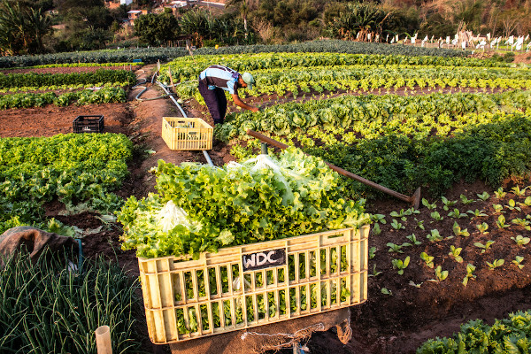
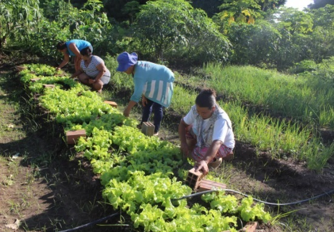
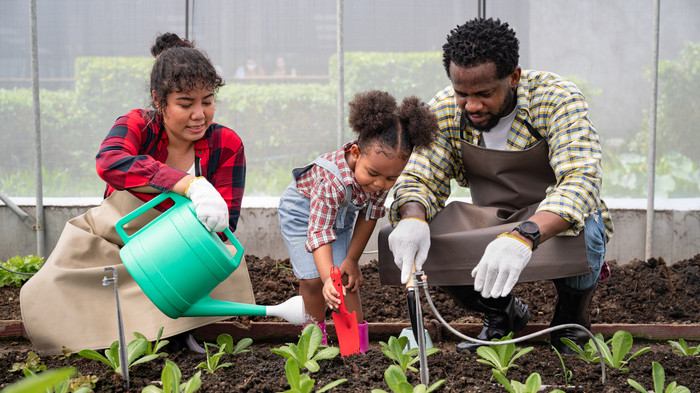

>
O que é: A agricultura familiar é cultivada por pequenos proprietários rurais, tendo aí o apoio familiar, também tem com o potencial de preservar e regenerar o meio ambiente. E geralmente a agricultura familiar envolve a produção de uma variedade de culturas fazendo com que promove a biodiversidade e também reduzindo a dependência da preservação das tradições aliadas ao conhecimento técnico."


 Sua importância: Atualmente a agricultura familiar está sendo muito importanate para a econômia e também tem um peso muito grande para segurança da nossa alimentação, e possui uma ótima condição para sustentabilidade devido a ofato de incorporar estratégias de equilíbrio entre os fatores econômicos, sociais e ambientais.
> Desafios: A agricultura familiar enfrenta vários desafios, e um dos principais é a falta de acesso a tecnologias e recursos necessários para a produção de alimentos em grande escala, e seu outro desafio é a falta de acesso a mercados e canais de distribuição educacional, e isso pode acabar afetando sua renda e sua capacidade de investir em novas tecnologias e processo de produção.
> Porcentagem: Hoje em dia a agricultura familiar é responsável por 70% dos alimentos que consumimos tais como a fruta, verduras, hortaliças e legumes, mandioca, milho, temperos, castanhas, panificados, mel e pescado.
>
.png)